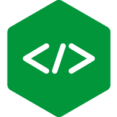
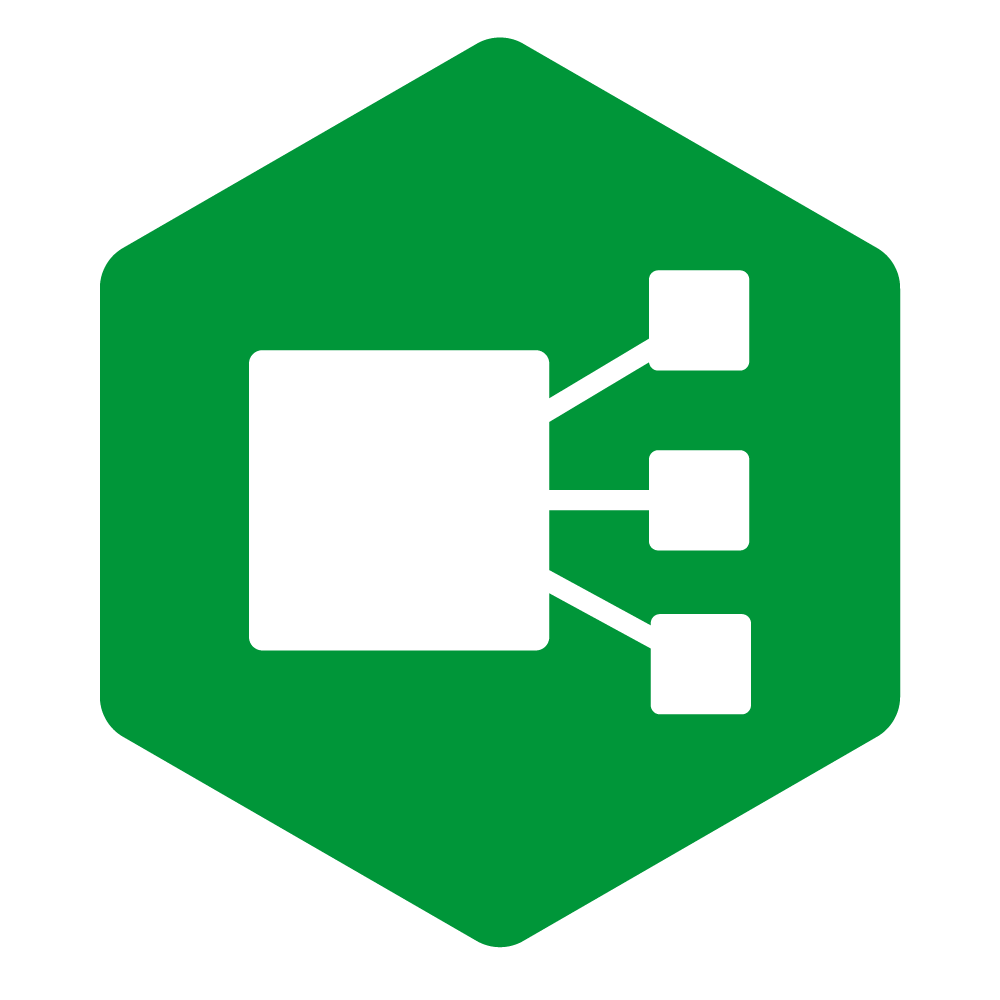
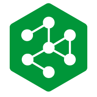

nginx
nginx ("engine x") is an HTTP web server, reverse proxy, content cache, load balancer, TCP/UDP proxy server, and mail proxy server. Originally written by Igor Sysoev and distributed under the 2-clause BSD License. Enterprise distributions, commercial support and training are available from F5, Inc.
Docs • Code • Install • Beginner's Guide
Latest News
| 2026-09-02 | nginx-1.31.5 mainline version has been released, featuring control API, predicate locations, and the ngx_http_json_module module. |
| 2026-09-02 | njs-1.0.1 version has been released, with fixes for access control bypass vulnerability in js_access (CVE-2026-18329), worker process crash vulnerability in ngx.fetch() (CVE-2026-78222), and heap buffer overflow vulnerability in xml.exclusiveC14n() (CVE-2026-78689). |
| 2026-08-19 | nginx-1.31.4 mainline version has been released. |
| 2026-07-15 | nginx-1.30.4 stable and nginx-1.31.3 mainline versions have been released, with fixes for buffer overflow vulnerability when using map with regex (CVE-2026-42533), memory disclosure vulnerability when using ngx_http_slice_module (CVE-2026-60005), and use-after-free vulnerability when using ngx_http_ssi_module (CVE-2026-56434). |
Other NGINX Projects
 | NGINX JavaScript (njs) extends nginx functionality with an ECMAScript-compatible interpreter for HTTP and Stream modules. Docs • Code |
 | NGINX Ingress Controller connects Kubernetes apps and services with rock solid request handling, auth, self-service CRDs, and easy debugging. Not to be confused with ingress-nginx, the separate Kubernetes community project. Docs • Code |
 | NGINX Gateway Fabric provides L4 and L7 routing capabilities in Kubernetes, implementing the Gateway API using NGINX as the data plane. Docs • Code |